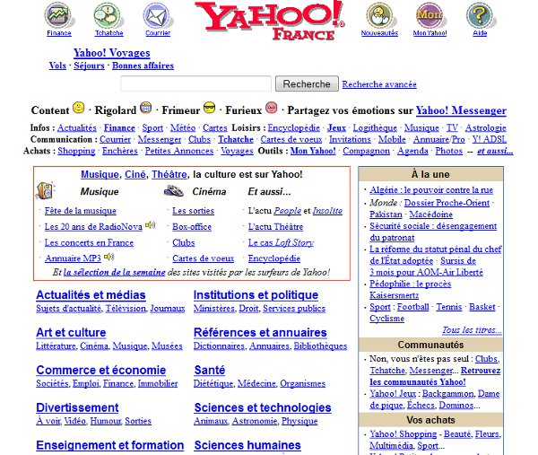
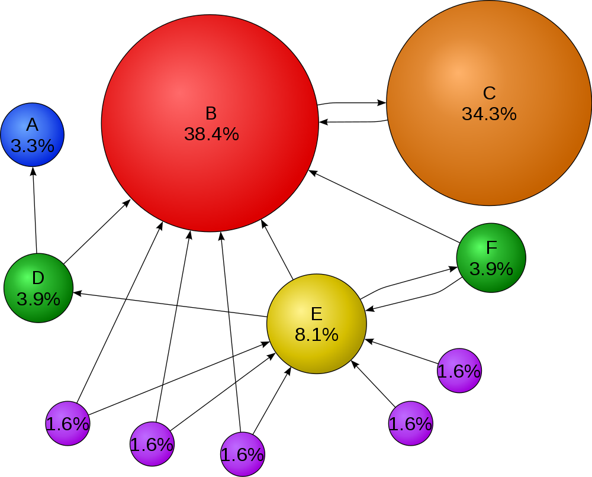
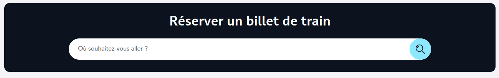

2[Séance 2 : 09/09] CHERCHER: corpus et ressources numériques
2.1 Une histoire d’internet et du Web
Nous avons évoqué, la semaine passée, Internet le Web. Qu’en avez-vous retenu ? S’agit-il de la même chose ?
Ce ne sont pas tant les « nouvelles technologies » en général, mais le réseau en lui-même qui a bouleversé notre rapport à la connaissance. (Mille 2014)
Dimension physique de l’infrastructure d’Internet qui permet la possibilité de l’existence du Web. Voir le documentaire World Brain par Stéphane Degoutin et Gwenola Wagon, visible ici.
TCP/IP : TCP (Transmission Control Protocol) et IP (Internet Protocol).
Une pile de protocoles :
physique : les câbles (cuivre ou fibre), éventuellement radio ; ;
liaison : Ethernet ou Wireless Ethernet (Wifi), il s’agit de déterminer comment les paquets sont acheminés ;
réseau : c’est la partie IP qui permet d’acheminer des paquets en donnant des adresses à toutes les machines connectées sur un réseau ;
transport : c’est la partie TCP, pour transférer les informations découpées en paquets et reconstituées en vérifiant qu’il ne manque rien (c’est ce qui permet à Internet d’être un réseau fiable) ;
application : il s’agit du Web, mais aussi d’autres applications comme le partage de fichiers (FTP) ou le courriel (IMAP et SMTP).
utiliser tracepath (ou traceroute) en ligne de commande
lancer la commande tracepath umontreal.ca ou traceroute umontreal.ca
analyser les résultats
2.1.4 Le Web
Internet ≠ Web
le Web = une application d’Internet
un protocole (HTTP) et des langages (HTML/CSS/JavaScript)
Le Web est une application d’Internet permettant de publier et de consulter facilement des informations.
2.1.5 Exercice
comment lire une page web via un autre outil qu’un navigateur ?
utiliser la commande curl dans le terminal
exemple 1 : curl https://mathildevrst.github.io/HNU2000-A25/Plan-Cours.html
exemple 2 : curl https://theread.me/raw-permalinks-for-accessibility/
2.2 Les navigateurs et moteurs de recherche
Au principe d’autorité qui a fait la force du PageRank, Google substitue de plus en plus un principe d’efficacité qui renvoie de manière toujours plus appropriée vers l’internaute les choix que l’algorithme a appris de ses comportements. (Cardon 2013)
Navigateur : application, installée sur l’ordinateur, qui permet d’afficher les informations contenues sur les sites Web ;
Moteur de recherche : application qui permet de localiser des informations sur le Web, […] outil devenu indispensable à partir du moment où les ressources Web, devenues trop nombreuses, ont rendu difficile l’indexation des contenus en ligne.
Quels navigateurs utilisez-vous ? Pourquoi ?
2.2.1 Le Web, au commencent étaient les annuaires
Dans les années 1990, les premiers répertoires (Yahoo!, DMOZ) proposaient une liste classée de sites web sous forme d’une arborescence thématique.
La démarche est différente d’aujourd’hui : on naviguait dans une hiérarchie, on ne formulait pas encore une requête.
Avantages : navigation linéaire par thématiques, parcours dans une arborescence logique, aperçu potentiellement exhaustif de l’existant.
Inconvénients : parfois une seule entrée pour un résultat qui concerne plusieurs thématiques, recherche fastidieuse ; explosion du Web rendant le modèle vite obsolète.

Yahoo! en 2001
2.2.2 Constituer des index
Un moteur de recherche recense et référence des pages Internet : pour cela, il utilise un logiciel, un robot d’indexation (dits crawlers ou spiders) qui parcourt l’ensemble du Web :
Exploration : exploration régulière du Web par le crawler qui suit tous les liens trouvés puis analyse les pages jugées intéressantes ;
Indexation : extraction de mots-clés des pages visitées et conservation d’une copie (= cache) de ces pages ;
Classement : classement, par le moteur de recherche, des pages selon leur pertinence par rapport à une série de mots-clés, permettant, à partir des mots d’une recherche, de retrouver le contenu recherché. Ce classement est lié notamment à la popularité de chaque page et au nombre de liens qui dirigent vers celle-ci.
Sundar Pichai, président-directeur général de Google, tente d’explique au Congrès Américain comment fonctionne Google
2.2.3 Quelques moteurs de recherche
2.2.3.1 Google
Le plus utilisé, merci le PageRank, algorithme mathématique utilisé pour déterminer la pertinence des pages Web
Attention aux premiers liens qui peuvent être sponsorisés
Personnalisation des résultats : deux utilisateurs effectuant la même requête n’obtiendront pas les mêmes résultats (prise en compte des recherches et activités passées, ainsi que du profil des utilisateurs (situation géographique, âge, langue, etc) (Ochigame and Ye 2021))
Quid des données personnelles ?
2.2.3.2 Alternatives
Quelques moteurs de recherche n’enregistrent pas les recherches effectuées et n’exploitent pas les données personnelles à des fins publicitaires ; ne filtrent pas les résultats de recherche en fonction des profils des utilisateurs → neutralité des recherches
Qwant :
Moteur de recherche français, se pose en défense de la vie privée sur le Web
Simple système qui exploite les banques de données réalisées par les crawlers
DuckDuckGo :
“Le moteur de recherche qui ne vous espionne pas”
métamoteur : ne possède pas sa propre base de données et interroge celles des moteurs de recherche
Gain de temps (recherche sur plusieurs moteurs à la fois)
Garantie de la protection des données
Startpage :
“Le moteur de recherche le plus privé au monde”
métamoteur (idem DuckDuckGo)
2.2.3.3 Google Scholar
Moteur de recherche généraliste ≠ Moteur de recherche d’articles scientifiques
Généralement, accès au texte intégral
Mais, pas de possibilité de tri/filtre des résultats
Pas de vérification du caractère scientifique des articles
2.2.3.4 Isidore
Projet de recherche, 2011 < TGIR Huma-Num
objectifs : mettre à disposition un outil de recherche adapté aux sciences humaines
ambition : proposer des fonctionnalités pour faciliter la recherche documentaire
S’appuie sur le principe du Web de données
Se distingue des autres moteurs de recherche :
Moissonage ciblé et des métadonnées et données scientifiques structurées selon des standards internationaux et dsponibles en accès libre
Indexation des données non structurées et structurées
Normalisation des métadonnées et enrichissement des données en s’appuyant sur des référentiels reconnus
Mise en évidence des sources de données indexées
Récupération des actualités
Algorithmes basés sur des référentiels selon des techniques documentaires ≠ PageRank
2.2.3.5 Exercice
constituez une bibliographie dans Isidore.science sur les humanités numériques ;
pour cela vous devez vous créer un compte Isidore (et donc HumanID) ;
utilisez les fonctionnalités de la recherche avancée ;
utilisez les fonctions de tris et de facettes ;
partagez avec moi votre « bibliothèque ».
Discussion : Que manque-t-il à Isidore ? Quels sont ses défauts ?
2.2.4 Google et le PageRank
En 1998, Google introduit le PageRank, qui attribue une importance à une page selon le nombre et la qualité des liens qui pointent vers elle (= système de mesure quantitative de popularité d’une page web). C’est inspiré par la mesure des articles académiques (Science Citation Index).

Schéma du PageRank
Cela fonde un principe d’autorité : les pages citées par beaucoup d’autres deviennent les plus visibles.
Progressivement, Google combine ce principe avec d’autres critères (localisation, personnalisation).
Pour en savoir plus sur le PageRank, écouter le podcast (France Inter n.d.) (à partir de la 21e mn.) ou lisez (Cardon 2013)
2.2.5 Les évolutions des moteurs de recherche
Il y a plusieurs évolutions majeures des moteurs de recherche ces dernières années :
Interface utilisateur (UI) : simplification radicale de la page Google, disparition progressive des options avancées.
Aide à la formulation : autocomplétion, suggestions liées aux recherches fréquentes.
Web sémantique et Knowledge Graph (2012–) : affichage de données structurées (fiche Wikipédia, horaires, météo,…) directement dans les résultats.
Personnalisation : traçage des comportements, adaptation aux historiques et aux contextes.
SEO (Search Engine Optimization) : pratiques d’optimisation par les sites pour “plaire” à Google.
IA générative (2023–) : moteurs qui ne se contentent plus de lister des pages, mais produisent directement des résumés de réponse (Google SGE, Perplexity).
Phénomène de simplification :
Suppression des options → interface minimale, recherche “intuitive” ;
Autocomplétion → orientation subtile des requêtes ;
Pertinence des premiers résultats → effet d’écrasement : très peu d’utilisateurs consultent la deuxième page ;
Affichage de données liées (web sémantique) → l’utilisateur n’a plus besoin de cliquer sur les sites sources ;
IA générative → bascule majeure : le moteur devient assistant ou agent conversationnel, qui filtre et reformule le Web au lieu de seulement l’indexer ;
Tendance globale → l’information va de plus en plus vers l’utilisateur, au risque de réduire sa diversité d’accès.

Outil de réservation SNCF, capture d’écran, 18 août 2025
Fonctionnement d’un moteur de recherche :
Des robots parcourent le Web, de liens en liens ;
Les données sont indexées et classées.
L’utilisateur formule une requête.
Le moteur sélectionne et hiérarchise les résultats grâce à des algorithmes.
Les requêtes influencent à leur tour les robots et les algorithmes (boucle d’apprentissage).
2.2.6 Vade-Mecum d’une recherche efficace
Commencer simple
Tapez quelques mots-clés principaux de votre sujet.
Utilisez des mots précis plutôt que des phrases longues.
Google ignore généralement les mots très fréquents (le, la, de…).
Utiliser les guillemets pour les expressions exactes
"expression exacte" → Google recherche ces mots dans cet ordre précis.
e.g. : "humanités numériques" ne retournera que les pages contenant exactement cette expression.
Limiter la recherche à un site ou un domaine
site:lesite.com requête → Recherche uniquement sur ce site.
e.g:site:umontreal.ca “humanités numériques”` → pages sur l’Université de Montréal concernant les humanités numériques.
Chercher un type de fichier spécifique
filetype:pdf requête → Cherche des fichiers PDF uniquement.
e.g. : filetype:pdf "édition numérique" → documents PDF sur l’édition numérique.
Chercher dans le titre d’une page
intitle:mot → Page dont le titre contient ce mot.
e.g. : intitle:"humanités numériques" → pages dont le titre contient l’expression exacte.
Les opérateurs
AND2, OR,NOT permettent de préciser la recherche. Des parenthèses servent à grouper des termes ou des opérateurs.
2.2.7 Une alternative aux moteurs de recherche : les flux RSS
Really Simple Syndication
Ressources dont le contenu est mis à jour de manière automatique selon les modifications d’un site Web
On s’abonne à un flux en l’ajoutant dans un agrégateur qui vérifiera automatiquement si de nouveaux contenus ont été mis en ligne.
Parmi les agrégateurs, des applications Web (Netvibes, Feedly, Inoreader, FreshRSS,…) ou des extensions de navigateur (Feedbro,…)
Avantage : on suit les actualités d’un site sans devoir s’y redre manuellement
Cardon, Dominique. 2013. “Dans l’esprit du PageRank:Une enquête sur l’algorithme de Google.”Réseaux 177 (1): 63–95. https://doi.org/10.3917/res.177.0063.
Debouy, Estelle. 2025. Vade-Mecum Informatique Pour Lettres Et Sciences Humaines. Edited by Presses universitaires de Rennes. Didact Méthodes.
France Inter. n.d. “Le Français qui a vu naître Google.” Accessed August 18, 2025.
Mille, Alain. 2014. “Chapitre 2. D’Internet au web.” In Pratiques de l’édition numérique, edited by Marcello Vitali-Rosati and Michael E. Sinatra, 31–48. Parcours numérique. Montréal: Presses de l’Université de Montréal. https://doi.org/10.4000/books.pum.315.
Ochigame, Rodrigo, and Katherine Ye. 2021. “Search Atlas: Visualizing Divergent Search Results Across Geopolitical Borders.” In Proceedings of the 2021 ACM Designing Interactive Systems Conference, 1970–83. DIS ’21. New York, NY, USA: Association for Computing Machinery. https://doi.org/10.1145/3461778.3462032.